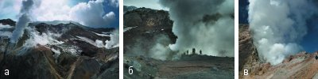
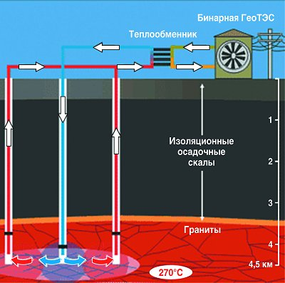

Практическое использование геотермальной энергии
 Т.Н. Черноштан
Т.Н. ЧерноштанЕще 150 лет тому назад на нашей планете использовались исключительно возобновляемые и экологически безопасные источники энергии: водные потоки рек и морских приливов – для вращения водяных колес, ветер – для приведение в действие мельниц и парусов, дрова, торф, отходы сельского хозяйства – для отопления. Однако с конца XIX века все более и более растущие темпы бурного промышленного развития вызвали необходимость сверхинтенсивного освоения и развития сначала топливной, а затем и атомной энергетики. Это привело к стремительному истощению углеродных ископаемых и к все более возрастающей опасности радиоактивного заражения и парникового эффекта земной атмосферы. Поэтому на пороге нынешнего века пришлось вновь обратиться к безопасным и возобновляемым энергетическим источникам: ветровой, солнечной, геотермальной, приливной энергии, энергии биомасс растительного и животного мира и на их основе создавать и успешно эксплуатировать новые нетрадиционные энергоустановки: приливные электростанции (ПЭС), ветровые энергоустановки (ВЭУ), геотермальные (ГеоТЭС) и солнечные (СЭС) электростанции, волновые энергоустановки (ВлЭУ), морские электростанции на месторождениях газа (КЭС).
В то время, как достигнутые успехи в создании ветровых, солнечных и ряда других типов нетрадиционных энергоустановок широко освещаются в журнальных публикациях, геотермальным энергоустановкам и, в частности, геотермальным электростанциям не уделяется того внимания, которого они по праву заслуживают. А между тем перспективы использования энергии тепла Земли поистине безграничны, поскольку под поверхностью нашей планеты, являющейся, образно говоря, гигантским естественным энергетическим котлом, сосредоточены огромнейшие резервы тепла и энергии, основными источниками которых являются происходящие в земной коре и мантии радиоактивные превращения, вызываемые распадом радиоактивных изотопов. Энергия этих источников столь велика, что она ежегодно на несколько сантиметров сдвигает литосферные пласты Земли, вызывает дрейф материков, землетрясения и извержения вулканов, из которых действующих, т. е. периодически извергавшихся за последние 500 лет, насчитывается 486. Кроме действующих, различают также потухшие или "уснувшие" вулканы, которые могут "проснуться" и начать извергаться в любой момент, как это, например, случилось в 79 году нашей эры с вулканом Везувий, который до этого пребывал в состоянии длительного покоя.

Таким образом, явные проявления колоссальной энергии тепла Земли наблюдаются в виде землетрясений и извержений вулканов, вызывающих огромные разрушения, в сотни и даже тысячи раз превосходящие разрушения от взрыва атомной бомбы. Эти проявления стихии сопровождаются также многочисленными человеческими жертвами, зачастую насчитывающими десятки и даже сотни тысяч человек, погибших под завалами разрушенных домов, как это, например, недавно произошло в Китае. Совсем другая картина наблюдается в случае, когда тот или иной вулкан не извергает лаву и пепел, а находятся в спокойном состоянии, как это наглядно демонстрируют приведенные на рис.1 фотографии Мутновского вулкана, расположенного на юге Камчатки (Российская Федерация). На этих фотографиях показано: панорама внутри вулкана (а), в окрестности вулкана (б), в кратере вулкана (г).
К сожалению, человечество еще не научилось использовать энергию вулканов в мирных целях. А вот рассматриваемые далее скрытые, на первый взгляд незаметные, проявления энергии земных недр, уже давно эффективно используются людьми для получения тепловой, а в течение последних почти 100 лет также и электрической энергии [1 – 8]. Одним из таких скрытых проявлений этой энергии является рост температуры земной коры и мантии по мере приближения к ядру Земли. Эта температура с глубиной повышается в среднем на 20°С на 1 км, достигая на уровне 2 – 3 км от поверхности Земли более 100, а на глубине 100 км даже 1300 – 1500ºС, что вызывает нагрев воды, циркулирующей на больших глубинах, до значительных температур. В вулканических регионах нашей планеты эта вода поднимается на поверхность по трещинам в земной коре, а в сейсмически спокойных регионах ее можно выводить на поверхность по пробуренным скважинам. Для этого достаточно закачивать в эти скважины вниз холодную воду, получая при этом по рядом пробуренным скважинам поднимающуюся вверх перегретую геотермальную воду и образовавшийся из нее пар.
Несмотря на кажущуюся простоту получения перегретой геотермальной воды и образующегося из нее пара и последующего преобразования энергии этой воды и пара в электроэнергию с помощью турбин и подсоединенных к ним турбогенераторов, техническая реализация такого способа получения электроэнергии, подробно рассматриваемого в этой статье, является достаточно сложной научно-технической проблемой. Об этом, в частности, свидетельствует хотя бы тот факт, что в США, на Филиппинах, в Мексике, Италии, Японии и некоторых других странах в течение последних 20 лет затраты только на создание новых геотермальных технологий превысили 2 млрд. долларов США.
Основные достоинства и недостатки геотермальной энергии
Современная востребованность геотермальной энергии как одного из видов возобновляемой энергии обусловлена: истощением запасов органического топлива и зависимостью большинства развитых стран от его импорта (в основном импорта нефти и газа), а также с существенным отрицательным влиянием топливной и ядерной энергетики на среду обитания человека и на дикую природу. Все же, применяя геотермальную энергию, следует в полной мере учитывать ее достоинства и недостатки [3, 6, 7].
Главным достоинством геотермальной энергии является возможность ее использования в виде геотермальной воды или смеси воды и пара (в зависимости от их температуры) для нужд горячего водо- и теплоснабжения, для выработки электроэнергии либо одновременно для всех трех целей, ее практическая неиссякаемость, полная независимость от условий окружающей среды, времени суток и года. Тем самым использование геотермальной энергии (наряду с использованием других экологически чистых возобновляемых источников энергии) может внести существенный вклад в решение следующих неотложных проблем:
- Обеспечение устойчивого тепло- и электроснабжения населения в тех зонах нашей планеты, где централизованное энергоснабжение отсутствует или обходится слишком дорого (например, в России на Камчатке, в районах Крайнего Севера и т.п.).
- Обеспечение гарантированного минимума энергоснабжения населения в зонах неустойчивого централизованного энергоснабжения из-за дефицита электроэнергии в энергосистемах, предотвращение ущерба от аварийных и ограничительных отключений и т.п.
- Снижение вредных выбросов от энергоустановок в отдельных регионах со сложной экологической обстановкой.
При этом в вулканических регионах планеты высокотемпературное тепло, нагревающее геотермальную воду до значений температур, превышающих 140 – 150°С, экономически наиболее выгодно использовать для выработки электроэнергии. Подземные геотермальные воды со значениями температур, не превышающими 100°С, как правило, экономически выгодно использовать для нужд теплоснабжения, горячего водоснабжения и для других целей в соответствии с рекомендациями, приведенными в табл.1.
| Значение температуры геотермальной воды, °С | Область применения геотермальной воды |
| Более 140 | Выработка электроэнергии |
| Менее 100 | Системы отопления зданий и сооружений |
| Около 60 | Системы горячего водоснабжения |
| Менее 60 | Системы геотермального теплоснабжения теплиц,геотермальные холодильные установки и т.п. |
Табл.1.
Обратим внимание на то, что эти рекомендации по мере развития и совершенствования геотермальных технологий пересматриваются в сторону использования для производства электроэнергии геотермальных вод с все более низкими температурами. Так, разработанные в настоящее время комбинированные схемы использования геотермальных источников позволяют использовать для производства электроэнергии теплоносители с начальными температурами 70 – 80°С, что значительно ниже рекомендуемых в табл.1 температур (150°С и выше). В частности, в Санкт-Петербургском политехническом институте созданы гидропаровые турбины, использование которых на ГеоТЭС позволяет увеличивать полезную мощность двухконтурных систем (второй контур – водный пар) в диапазоне температур 20 – 200°С в среднем на 22 % [6].
Значительно повышается эффективность применения термальных вод при их комплексном использовании. При этом в разных технологических процессах можно достичь наиболее полной реализации теплового потенциала воды, в том числе и остаточного, а также получить содержащиеся в термальной воде ценные компоненты (йод, бром, литий, цезий, кухонная соль, глауберова соль, борная кислота и многие другие) для их промышленного использования.
Основной недостаток геотермальной энергии – необходимость обратной закачки отработанной воды в подземный водоносный горизонт. Другой недостаток этой энергии заключается в высокой минерализации термальных вод большинства месторождений и наличии в воде токсичных соединений и металлов, что в большинстве случаев исключает возможность сброса этих вод в расположенные на поверхности природные водные системы. Отмеченные выше недостатки геотермальной энергии приводят к тому, что для практического использования теплоты геотермальных вод необходимы значительные капитальные затраты на бурение скважин, обратную закачку отработанной геотермальной воды, а также на создание коррозийно-стойкого теплотехнического оборудования.
Однако в связи с внедрением новых, менее затратных, технологий бурения скважин, применением эффективных способов очистки воды от токсичных соединений и металлов капитальные затраты на отбор тепла от геотермальных вод непрерывно снижаются. К тому же следует иметь ввиду, что геотермальная энергетика в последнее время существенно продвинулась в своем развитии. Так, последние разработки показали возможность выработки электроэнергии при температуре пароводяной смеси ниже 80ºС, что позволяет гораздо шире применять ГеоТЭС для выработки электроэнергии. В связи с эти ожидается, что в странах со значительным геотермальным потенциалом и первую очередь в США мощность ГеоТЭС в самое ближайшее время удвоится.
Еще более впечатляет появившаяся несколько лет тому назад новая, разработанная австралийской компанией Geodynamics Ltd., поистине революционная технология строительства ГеоТЭС – так называемая технология Hot-Dry-Rock, существенно повышающая эффективность преобразования энергии геотермальных вод в электроэнергию. Суть этой технологии заключается в следующем [5].
До самого последнего времени в термоэнергетике незыблемым считался главный принцип работы всех геотермальных станций, заключающийся в использовании естественного выхода пара из подземных резервуаров и источников. Австралийцы отступили от этого принципа и решили сами создать подходящий "гейзер". Для создания такого гейзера австралийские геофизики отыскали в пустыне на юго-востоке Австралии точку, где тектоника и изолированность скальных пород создают аномалию, которая круглогодично поддерживает в округе очень высокую температуру. По оценкам австралийских геологов, залегающие на глубине 4,5 км гранитные породы разогреваются до 270°С, и поэтому если на такую глубину через скважину закачать под большим давлением воду, то она, повсеместно проникая в трещины горячего гранита, будет их расширять, одновременно нагреваясь, а затем по другой пробуренной скважине будет подниматься на поверхность. После этого нагретую воду можно будет без особого труда собирать в теплообменнике, а полученную от нее энергию использовать для испарения другой жидкости с более низкой температурой кипения, пар которой, в свою очередь, и приведет в действие паровые турбины. Вода, отдавшая геотермальное тепло, вновь будет направлена через скважину на глубину, и цикл таким образом повторится. Принципиальная схема получения электроэнергии по технологии, предложенной австралийской компанией Geodynamics Ltd., приведена на рис.2.

Безусловно, реализовать эту технологию можно не в любом месте, а только там, где залегающий на глубине гранит нагревается до температуры не менее 250 – 270°С. При применении такой технологии ключевую роль играет температура, понижение которой на 50°С по оценкам ученых вдвое повысит стоимость электроэнергии.
Для подтверждения прогнозов специалисты компании Geodynamics Ltd. уже пробурили две скважины глубиной по 4,5 км каждая и получили доказательство того, что на этой глубине температура достигает искомых 270 – 300°С. В настоящее время проводятся работы по оценке общих запасов геотермальной энергии в этой аномальной точке юга Австралии. По предварительным расчетам в этой аномальной точке можно получать электроэнергию мощностью более 1 ГВт, причем стоимость этой энергии будет вдвое дешевле стоимости ветровой энергии и в 8 – 10 раз дешевле солнечной.
Мировой потенциал геотермальной энергии и перспективы его использования
Группа эксперт о в и з Всемирной ассоциации по вопросам геотермальной энергии, которая произвела оценку запасов низко- и высокотемпературной геотермальной энергии для кождого континента, получила следующие данные по потенциалу различных типов геотермальных источников нашей планеты (табл.2) [3].
| Наименование континента | Тип геотермального источника: | ||
| высокотемпературный, используемый для производства электроэнергии, ТДж/год | низкотемпературный, используемый в виде теплоты, ТДж/год (нижняя граница) | ||
| традиционные технологии | традиционные и бинарные технологии | ||
| Европа | 1830 | 3700 | >370 |
| Азия | 2970 | 5900 | >320 |
| Африка | 1220 | 2400 | >240 |
| Северная Америка | 1330 | 2700 | >120 |
| Латинская Америка | 2800 | 5600 | >240 |
| Океания | 1050 | 2100 | >110 |
| Мировой потенциал | 11200 | 22400 | >1400 |
Табл.2
Как видно из табл.2, потенциал геотермальных источников энергии просто таки колоссален. Однако используется он крайне незначительно: установленная мощность ГеоТЭС во всем мире на начало 1990-х годов составляла всего лишь около 5000, а на начало 2000-х годов – около 6000 МВт, существенно уступая по этому показателю большинству электростанций, работающих на других возобновляемых источниках энергии. Да и выработка электроэнергии на ГеоТЭС в этот период времени была незначительной. Об этом свидетельствуют следующие данные. В структуре мирового производства электроэнергии возобновляемые источники энергии (к которым согласно классификации Международного энергетического агенства (ІЕА) относятся: сжигаемые возобновляемые источники энергии и отходы биомассы, гидро-, геотермальная и солнечная энергия, энергия ветра, а также энергия приливов, морских волн океанов) в 2000 году обеспечили 19 % общемирового производства электроэнергии – сразу после угля (39 %), опередив атомную энергетику (17 %), природный газ (17 %) и нефть (8 %). При этом, несмотря на значительные темпы развития, геотермальная, солнечная и ветровая энергия составляла в 2000 году менее 3 % от общего объема использования энергии, получаемой от возобновляемых источников.
Однако в настоящее время геотермальная электроэнергетика развивается ускоренными темпами, не в последнюю очередь из-за галопирующего увеличения стоимости нефти и газа. Этому развитию во многом способствуют принятые во многих странах мира правительственные программы, поддерживающие это направление развития геотермальной энергетики.
Отметим, что геотермальные ресурсы разведаны в 80 странах мира и в 58 из них активно используются. Крупнейшим производителем геотермальной электроэнергии являются США, где геотермальная электроэнергетика, как один из альтернативных источников энергии, имеет особую правительственную поддержку. В США в 2005 году на ГеоТЭС было выработано около 16 млрд. кВт·ч электроэнергии в таких основных промышленных зонах, как зона Больших гейзеров, расположенная в 100 км к северу от Сан-Франциско (1360 МВт установленной мощности), северная часть Соленого моря в центральной Калифорнии (570 МВт установленной мощности), Невада (235 МВт установленной мощности) и др. Геотермальная электроэнергетика бурно развивается также в ряде других стран, в том числе: на Филиппинах, где на ГеоТЭС на начало 2003 года было установлено 1930 МВт электрической мощности, что позволило обеспечить около 27% потребностей страны в электроэнергии; в Италии, где в 2003 году действовали геотермальные энергоустановки общей мощностью в 790 МВт; в Исландии, где действуют пять теплофикационных ГеоТЭС общей электрической мощностью 420 МВт, вырабатывающие 26,5 % всей электроэнергии в стране; в Кении, где в 2005 году действовали три ГеоТЭС общей электрической мощностью в 160 МВт и были разработаны планы по доведению этих мощностей до 576 МВт [3, 7]. Перечень государств, где ускоренными темпами развивается геотермальная электроэнергетика, безусловно, можно продолжить, включив в их число также Россию и Украину (что будет сделано несколько позднее).
Характеризуя развитие мировой геотермальной электроэнергетики как неотъемлемой составной части возобновляемой энергетики на более отдаленную перспективу, отметим следующее. Согласно прогнозным расчетам в 2030 году ожидается некоторое (до 12,5 % по сравнению с 13,8 % в 2000 году) снижение доли возобновляемых источников энергии в общемировом объеме производства энергии. При этом энергия солнца, ветра и геотермальных вод будет развиваться ускоренными темпами, ежегодно увеличиваясь в среднем на 4,1 %, однако вследствие "низкого" старта их доля в структуре возобновляемых источников и в 2030 году будет оставаться наименьшей.
Литература
- Геотермическая электростанция. БСЭ, т. 6.
- Выморков Б.М. Геотермальные электростанции. – М.-Л., 1966.
- Конеченков А., Остапенко С. Энергия тепла Земли // Электропанорама. – 2003. – №7-8.
- Конеченков А.Е. Новые энергетические директивы ЕС // Электропанорама. – 2008. – №6.
- Австралийская компания будет добывать тепло из-под Земли. www.nsu.ru/psj/topnews/content/archnews.htm.
- Гетермальное энергоснабжение. www.esco.co.ua/journal/2005_11/art07_28.htm.
- Гетермальная энергетика. http://ru.wikipedia.org/wiki/Гетермальная_энергетика.
- Поваров О.А., Васильев В.А., Томков Ю.П., Томаров Г.В. Геотермальные электрические станции с комбинированным циклом для северных районов России. http://www.transgasindustry.com.